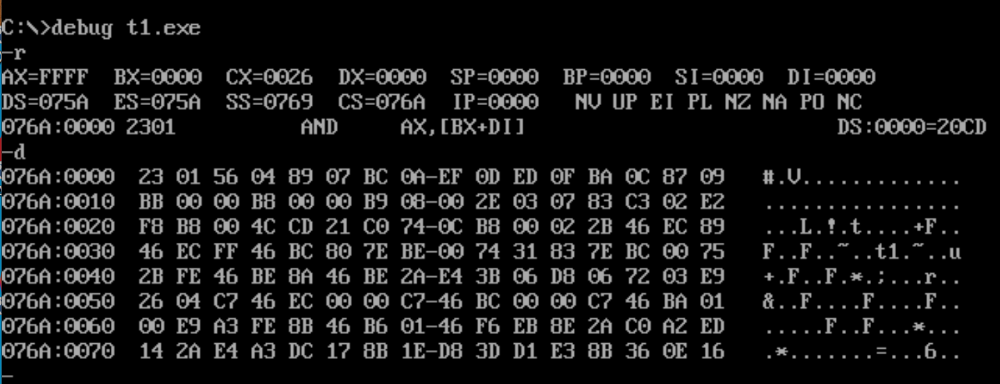
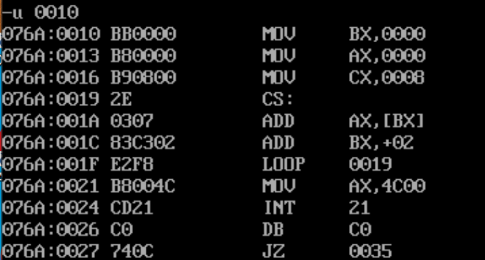
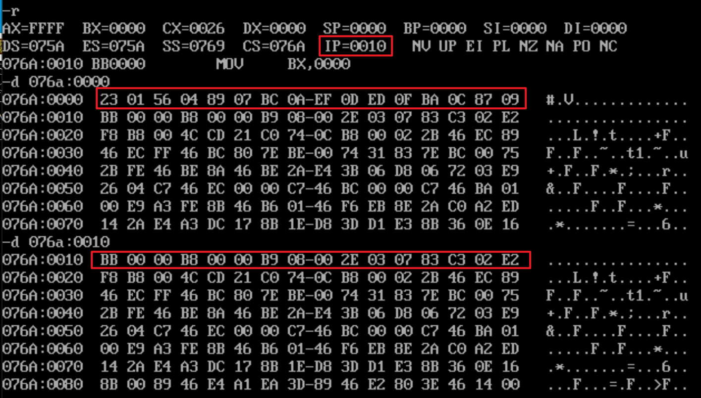
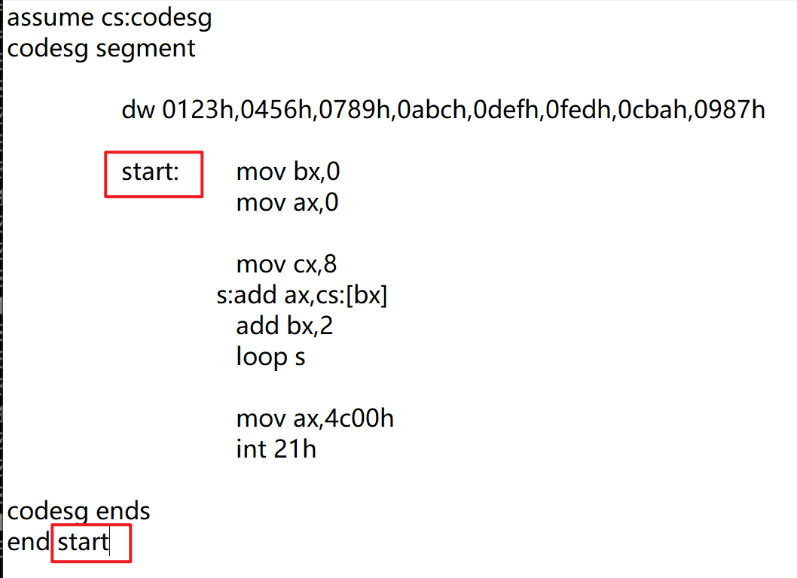
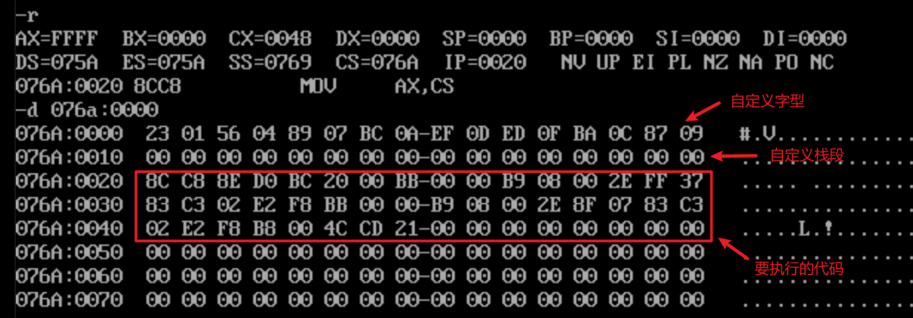
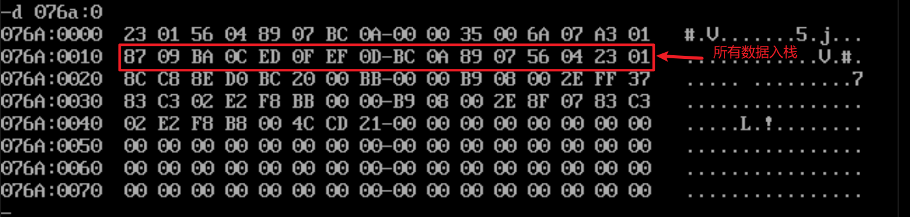
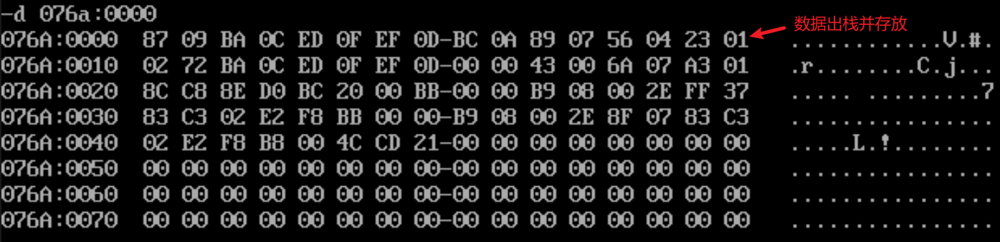
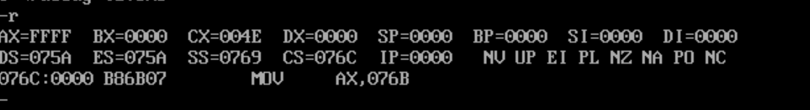
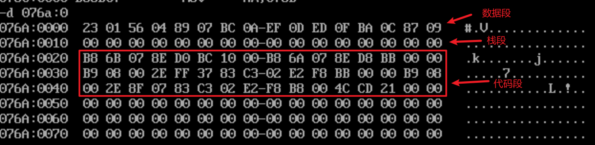
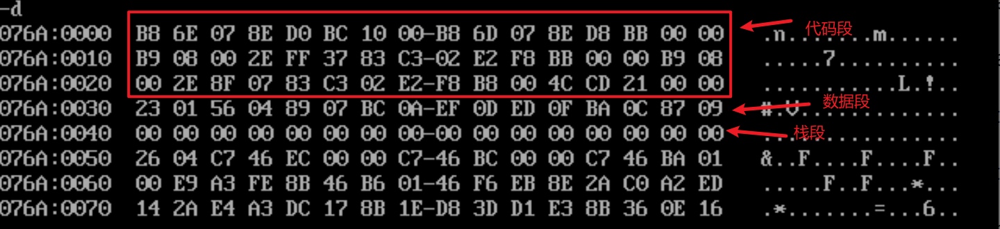

有了多个段之后，程序会变得更加有条理、舒服🍺
产生的问题
将 0123h,0456h,0789h,0abch,0defh,0fedh,0cbah,0987h 以下8个数据的和的结果放入寄存器 ax 中
直接上代码进行分析
1 | assume cs:codesg |
其中的 dw 含义是定义字型数据，即“define word”。在这里定义了8个字型数据，它们所占用的空间大小为16个字节。
再对程序进行编译和链接并查看一下基本的情况
关注图中 -d 后的第一行，我们可以发现我们所想要写入的数据已经被连续地存放在了代码段的最开始处。
关注图中 -r 中显示的所要执行的下一条命令，可以发现是and ax,[bx+di]并不是我们所想要的mov bx,0。
产生这种情况的原因在于，计算机认为我们程序执行的开始是 076a:0000 处，但是在此处之后的16个字节已经被我们用来存放我们所定义的字型数据了，而and ax,[bx+di]就是我们所存放的数据变成汇编语言的结果。
**所产生的问题就是：**当我们的程序包含有自定义的数据时，由于计算机自动将 cs:ip 中的内容当程序执行的第一句话，我们所定义的数据会被当成命令来执行。
我们也可以推理出来，我们所希望计算机开始执行语句的地方是 076a:0010 处

解决方式
修改代码
1 | assume cs:codesg |
我们通过标识符 start 来告诉计算机我们的代码段所要开始执行语句的位置

start 标识符是我们可以进行自定义的，只要是符合规定的名称都可以，其次就是保证两处的标识符要保持一致

**end 的作用：**end 不但通知计算机程序的结束之处，还告诉了编译器程序的入口之处。
代码段中使用栈
栈的初体验
**什么是栈：**是一种数据结构，里面的数据会按照先进后出的原则进行存放使用。
问题体验：
将这些数据0123h,0456h,0789h,0abch,0defh,0fedh,0cbah,0987h按照逆序存放
源码：
1 | assume cs:codesg |
debug 后的初始状态

执行完第一个 loop 后的状态

执行完第二个 loop 后的状态

**小结：**以上是我们通过在代码段中自定义数据段和栈段来实现我们的功能，但当我们的程序变得复杂是，将这些段都糊在一起会显得很杂乱且容易出错。
多个段
为了解决上面的问题，我们使用多个段。所谓的多个段就是：将数据、代码、栈放入不同的段中。
使用多个段的程序
1 | assume cs:codesg,ds:data,ss:stack |
观察初始状态的寄存器情况

一般来说寄存器中 DS 和 CS 的数值应当是相差 10h 的，但是这里它们相差了 12h，再观察图中的汇编语句我们可以知道我们所定义的 stack 段的段地址是 076b。
查看内存中的情况

我们所申请的数据段和栈段被安排了代码段之前，并且每一段的空间大小都为16个字节，这也就是为什么 DS 和 CS相差了12h的原因。
对多个段的顺序进行改变
1 | assume cs:codesg,ds:data,ss:stack |
当我们在程序中改变各个段的次序时，可以发现在内存中它们的位置也发生了改变

寄存器中的 DS 和 CS 的数值相差为10h，而所申请的栈段的段地址变成了 076e，我们也可以大致推断出计算机运行我们程序的顺序是从上到下的

本文作者：GhDemi
本文链接： https://ghdemi.github.io/2022/05/24/%E5%A4%9A%E4%B8%AA%E6%AE%B5%E7%9A%84%E7%A8%8B%E5%BA%8F/
文章默认使用 CC BY-NC-SA 4.0 协议进行许可，使用时请注意遵守协议。